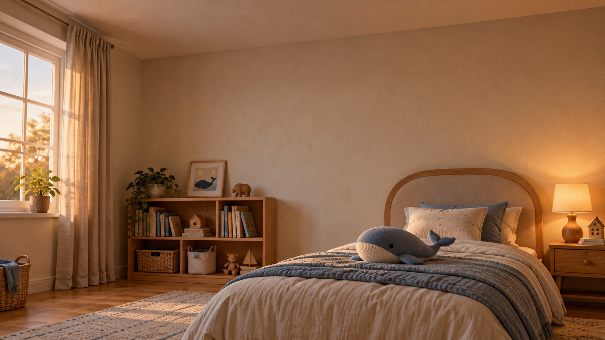

Milo Plush
The comfort object, character anchor, and physical destination for bedtime.
SKU_OCEAN_001 · P0
Ocean Room 001
Milo is going home.
See Ocean Room 001
Only a few things come alive: five small fish near the floor, one shell event, one reef hiding place, and Milo. Each creature moves, pauses, hides, and returns instead of looping forever.
Meet the room resident
Milo is not wallpaper. He appears, notices the child, approaches the room’s physical objects, plays briefly, and leaves space for the real room to breathe.
The signature bedtime moment
In Rest mode the fish leave, the shell dims, and digital Milo swims behind the bed toward the physical Milo Plush. The digital character becomes smaller and softer until only the plush remains.
Build this room
The comfort object, character anchor, and physical destination for bedtime.
SKU_OCEAN_001 · P0A warm night light that calls one short discovery into the room.
SKU_OCEAN_002 · P1A quiet shelf object that gives the fish a believable place to hide.
SKU_OCEAN_003 · P1One room · three rhythms
Five fish move low, pause, and briefly follow a touch before returning to their own behavior.
The Shell Light glows, fish gather, Milo notices, and the room returns to idle.
Activity collapses toward the bed as digital Milo returns into the physical plush.
Built for real rooms
No cameraThis L0.5 prototype uses touch and pointer input—not child tracking.
No recordingPilot participation never requires a photo, video, quote, or public post.
Gentle motionNo strobe, rapid flashing, sharp luminance change, or startle entrance.
Room-awareGeometry masks let virtual life pass behind the bed, shelf, and curtain.
MyNest Ocean pilot
We are preparing a small supervised visual test for children ages 3–6. Pilot observations are anonymous, structured, and separate from publication consent.